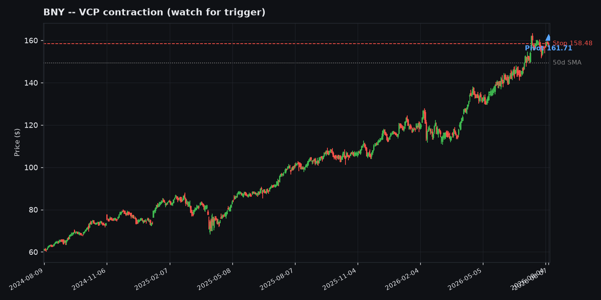
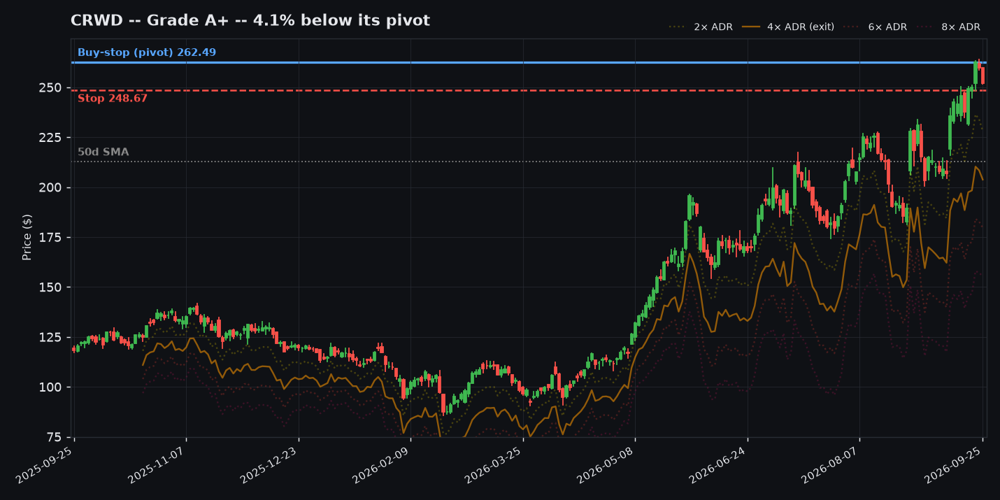
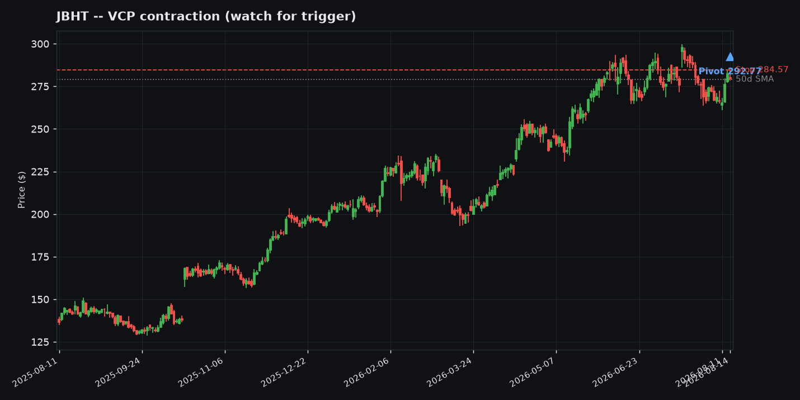
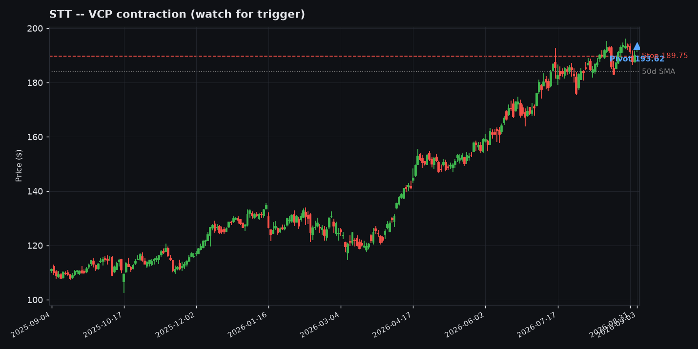
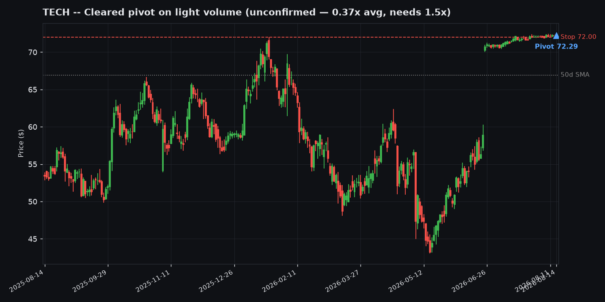
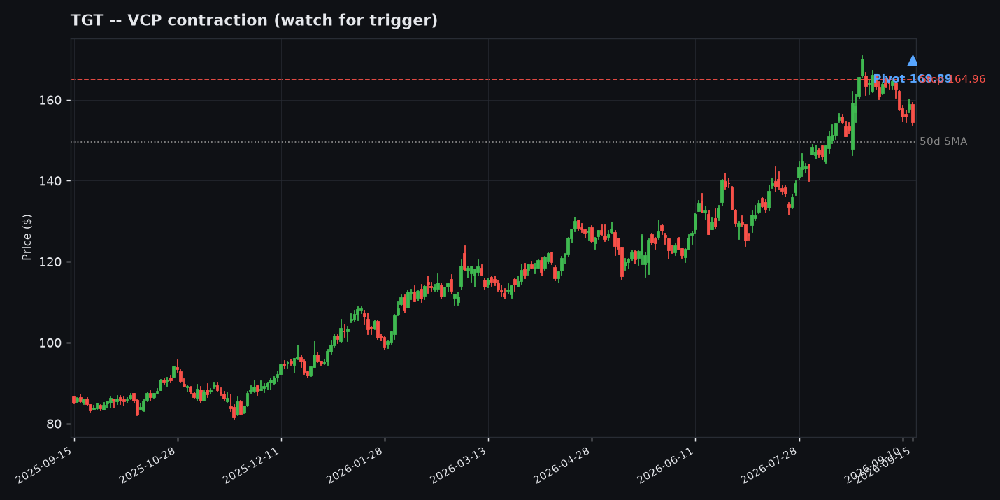

Worth Watching -- Today's Setups in Context
Annotated charts for the 8 tickers currently on the Momentum Desk "Worth Watching" list (as of 2026-08-18), each classified against the grinder/rocket archetypes from the backtest's A++ Setup Analysis. The marked pivot is the current entry trigger, the stop is the tighter of the Minervini 7.5%-below-pivot or Qullamaggie 1x-ADR%-below-pivot rule, and the dashed gray line is the 50-day SMA.
This is a screener pass, not a recommendation -- "grinder-leaning" and "rocket-leaning" describe which historical big-winner pattern a ticker's current structure most resembles, not a guarantee it plays out that way. "Neither / mixed" tickers passed the Worth Watching screen on their own criteria without cleanly matching either archetype.







